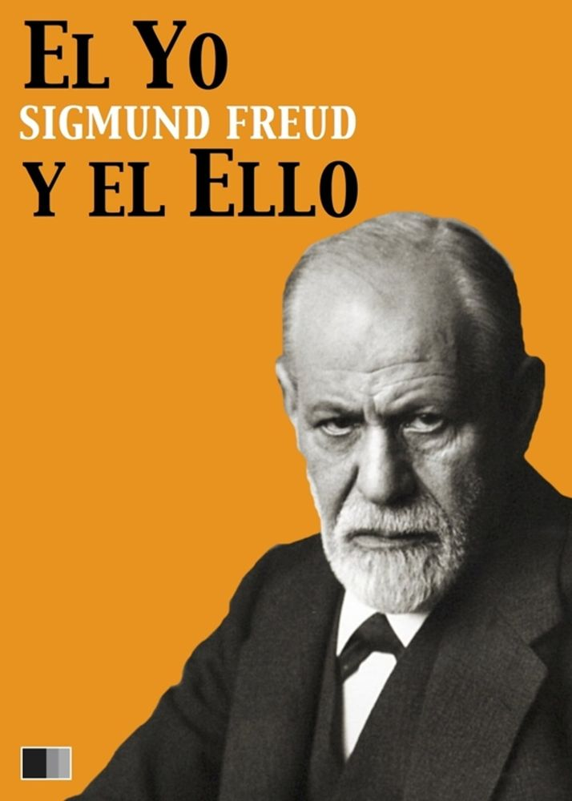

📚 Volver al Catálogo
📚 Volver a la Galería
S. Freud
El Yo y el Ello
- Sinópsis:
-
En "El Yo y el Ello", Freud presenta una revisión fundamental de su modelo de la psique. Introduce una estructura tripartita compuesta por el Ello (la sede de los instintos y deseos inconscientes), el Yo (la instancia mediadora entre el Ello y el mundo exterior, regida por el principio de realidad), y el Superyó (la internalización de las normas morales y los ideales parentales y sociales). Freud explora las dinámicas y conflictos entre estas tres instancias, explicando cómo se forma la personalidad y cómo surgen los mecanismos de defensa del Yo para lidiar con las demandas del Ello, las restricciones del Superyó y las presiones de la realidad. El libro profundiza en la comprensión del inconsciente y su influencia en el comportamiento humano.

- Detalles de Publicación:
- Escrito: Principalmente en 1923.
- Publicado: Originalmente en alemán en 1923 con el título "Das Ich und das Es". Posteriormente, fue traducido a numerosos idiomas, convirtiéndose en una obra clave para la teoría psicoanalítica.
- Más libros de Freud aquí
⬆️